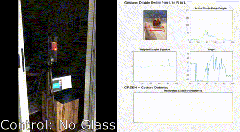
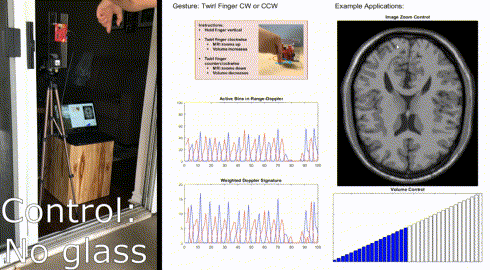
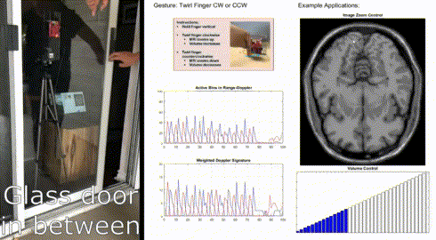
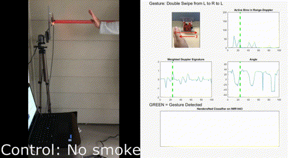
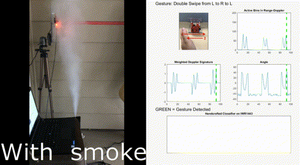
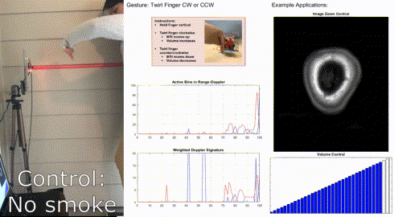
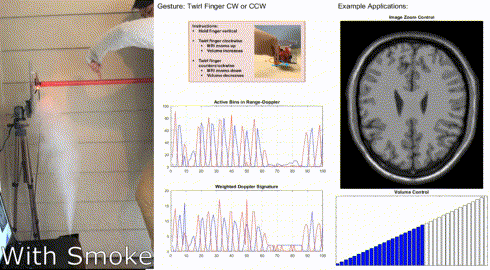

Introduction
The objective of this experiment is to demonstrate the ability to detect gesture motions using a TI mmWave Sensor EVM through two impediments, glass and smoke. Two types of gesture motions were tested, a finger twirl motion and hand double swipe motion. Gestures were performed both without any impediment and then with the impediment introduced in between the sensor and the gestures.
Setup
The setup for this experiment can be divided into two parts, namely physical setup and software setup. These are detailed below:
Physical Setup
The physical setup includes information about the scene such as the distance between the target and the sensor antenna, the type of target used, hardware setup and any other physical considerations e.g. non-reflective surfaces or use of anechoic chamber etc. The physical setup used for this experiment is given below:
The following cases were tested for each of the two gestures:
| Glass Impediment | Smoke Impediment | |
|---|---|---|
| Control | Glass Sliding door open | Fog machine off |
| Test Case | Glass sliding door closed | Fog machine on and producing smoke |
Glass Impediment Setup
- The experiment was performed on a home patio with a sliding glass door.
- An IWR1443 EVM was mounted on a tripod and placed with the sensor parallel to the glass door and 5cm from the glass.
- The target was the hand making the gesture motion. Motions were performed directly in front of the sensor and at a distance of 10-15cm from the sensor.
- In the control case, the sliding glass door was opened so that there was nothing in between the hand and the sensor.
- In the test case, the sliding glass door was closed so that a double pane glass door was in between the hand and the sensor.
Smoke Impediment Setup
- The experiment was performed in the corner of a home patio.
- An IWR1443 EVM was mounted on a tripod so that it was elevated 1.1m from the ground.
- A fog machine was placed on the ground with the dispensing nozzle oriented straight up and 10cm from the sensor so that fog could be dispensed to rise in front of the sensor.
- The target was the hand making the gesture motion. Motions were performed directly in front of the sensor and at a distance of 20-40cm from the sensor.
- In the control case, the fog machine was off so that there was nothing in between the hand and the sensor.
- In the test case, the fog machine was turned on so that a stream of smoke was introduced between the hand and the sensor.
Software setup
- The IWR1443 EVM was running firmware developed for each gesture and connected to a Windows PC to visualize the results.
- The Windows PC connected to the IWR1443 EVM was running GUI(s) specifically developed for the Gesture Demo.
- The Gesture demo firmware, the associated chirp configuration(s) and visualizer GUI for Swipe and Twirl can be found on TI Resource Explorer.
Method
The steps presented below were repeated for each gesture and impediment combination.
- The physical and software setup was carried out as detailed above.
- The gesture was repeated at least 5x under the control case, with a few seconds in between each gesture.
- Impediment was introduced
- For glass: The glass door was close as detailed above in the Physical Setup section.
- For smoke: The fog generator was turned on as detailed above in the Physical Setup section.
- The gesture was repeated at least 5x with the impediment, with a few seconds in between each gesture.
Results
The steps presented above were repeated for each gesture and impediment type. The results are summarized in the following table:
Detection Results
| Gesture | Control | With Impediment | |
|---|---|---|---|
| Glass | Double Swipe | Detected | Detected |
Twirl | Detected | Detected | |
| Smoke | Double Swipe | Detected | Detected |
Twirl | Detected | Detected |
The following table shows simulatenous recordings of the gesture as performed and the response of the gesture recognition GUI:
| Gesture | Control | With Glass Door Impediment |
|---|---|---|
| Double Swipe |  |
|
| Twirl |  |  |
Gesture | Control | With Smoke Impediment |
Double Swipe |  |  |
| Twirl |  |  |

Conclusion
- The experiment demonstrates that an IWR1443 mmWave sensor EVM is capable of gesture recognition with either glass or smoke as impediments between the sensor and the target hand making the gesture.
- The impediments do degrade the signals used for gesture detection. However, the degree to which this affects gesture recognition capabilities can be tuned by considering sensor parameters as well gesture recognition algorithm parameters.